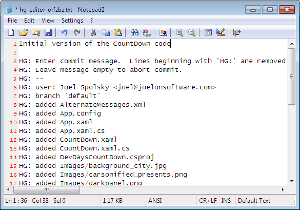

O Mercurial é um sistema de controle de versão. Os desenvolvedores o utilizam para gerenciar código-fonte. Ele serve a dois importantes propósitos:
- Mantém um rastro de cada uma das versões anteriores de cada arquivo
- Pode consolidar diferentes versões de seu código, de forma que seus colegas de trabalho podem trabalhar de maneira independente no código e então mesclar suas alterações
Sem o Mercurial, você poderia tentar manter versões antigas simplesmente fazendo várias cópias do diretório contendo todo o seu código:

Isto é tedioso, gasta muito espaço em disco e é confuso. Utilizar um controle de versão é a melhor maneira de fazer isso.
A maioria das pessoas trabalha com o Mercurial diretamente na linha de comando, que funciona em Windows, Unix e Mac. O comando do Mercurial é hg:
c:\hginit> hg
Mercurial Distributed SCM
basic commands:
add add the specified files on the next commit
annotate show changeset information by line for each file
clone make a copy of an existing repository
commit commit the specified files or all outstanding changes
diff diff repository (or selected files)
export dump the header and diffs for one or more changesets
forget forget the specified files on the next commit
init create a new repository in the given directory
log show revision history of entire repository or files
merge merge working directory with another revision
pull pull changes from the specified source
push push changes to the specified destination
remove remove the specified files on the next commit
serve export the repository via HTTP
status show changed files in the working directory
summary summarize working directory state
update update working directory
use "hg help" for the full list of commands or "hg -v" for details
Digitar hg sem qualquer outra coisa lhe dá uma lista dos comandos mais comuns que estão disponíveis. Você também pode tentar hg help para uma lista completa de comandos.
Para tirar vantagem do controle de versão, você precisa de um repositório. Um repositório armazena todas as versões anteriores de cada um de seus arquivos. Para economizar espaço em disco, ele na verdade não armazena uma cópia de cada versão—ele apenas armazena uma lista compacta das alterações feitas.
Antigamente, criar um repositório era uma complicação. Você tinha que ter um servidor central em algum lugar e tinha que instalar software nele. O Mercurial é distribuído, ou seja, você pode usá-lo sem nenhum servidor central. Você pode executá-lo inteiramente em seu próprio computador. E criar um repositório é super-fácil: você só tem que entrar no diretório onde seu código vai ficar…
c:\hginit> cd CountDown
c:\hginit\CountDown> dir /w
Volume in drive C has no label.
Volume Serial Number is 9862-36C5
Directory of c:\hginit\CountDown
[.] [..] a.txt
AlternateMessages.xml App.config App.xaml
App.xaml.cs CountDown.xaml CountDown.xaml.cs
DevDaysCountDown.csproj favicon.ico [Images]
[Properties] [TweetSharp]
9 File(s) 155,932 bytes
5 Dir(s) 76,083,609,600 bytes free
… aqui está o meu código, então basta digitar hg init:
cria um repositório
c:\hginit\CountDown> hg init c:\hginit\CountDown>
Ué, mas aconteceu alguma coisa? Parece que não aconteceu nada, mas se você prestar atenção, você vai ver que agora há um novo diretório chamado .hg:
c:\hginit\CountDown> dir /w
Volume in drive C has no label.
Volume Serial Number is 9862-36C5
Directory of c:\hginit\CountDown
[.] [..] [.hg]
a.txt AlternateMessages.xml App.config
App.xaml App.xaml.cs CountDown.xaml
CountDown.xaml.cs DevDaysCountDown.csproj favicon.ico
[Images] [Properties] [TweetSharp]
9 File(s) 155,932 bytes
6 Dir(s) 76,083,650,560 bytes free
Isso é o repositório! É um diretório repleto de tudo o que o Mercurial precisa. Configurações, versões antigas dos arquivos, tags, um par extra de meias para os dias de chuva, etc. Não entre nesse diretório! Você talvez nunca vá querer mexer com seu conteúdo diretamente.
OK, agora que nós já temos um novo repositório, vamos querer adicionar todos esses arquivos nele. É fácil também: apenas digite hg add.
marca os arquivos para serem adicionados ao repositório. Eles não serão adicionados efetivamente até que você dê commit
c:\hginit\CountDown> hg add adding AlternateMessages.xml adding App.config adding App.xaml adding App.xaml.cs adding CountDown.xaml adding CountDown.xaml.cs adding DevDaysCountDown.csproj adding Images\background_city.jpg adding Images\carsonified_presents.png adding Images\darkpanel.png adding Images\devdays.png adding Images\failwhale.png adding Images\holding_image.jpg adding Images\jeff_atwood.jpg adding Images\joel_spolsky.jpg adding Images\logo_stackoverflow.png adding Images\matt_lacey.jpg adding Images\sideDarkpanel.png adding Images\vertical_lines2.png adding Properties\AssemblyInfo.cs adding Properties\Resources.Designer.cs adding Properties\Resources.resx adding Properties\Settings.Designer.cs adding Properties\Settings.settings adding TweetSharp\Dimebrain.TweetSharp.dll adding TweetSharp\Dimebrain.TweetSharp.xml adding TweetSharp\Newtonsoft.Json.dll adding a.txt adding favicon.ico
Ainda tem mais um passo aqui… você tem que efetivar suas alterações com um commit. Que alterações? A alteração que corresponde a adicionar todos aqueles arquivos.
Por que você tem que dar commit? Com o Mercurial, executar um commit equivale a dizer “ei, está vendo como os arquivos estão agora?—por favor, lembre disso.” É como fazer uma cópia de cada diretório… toda vez que você tenha alterado alguma coisa que você possa gostar de manter, você dá commit.
salva o estado atual de todos os arquivos do repositório
c:\hginit\CountDown> hg commit
O Mercurial vai abrir um editor de texto para que você possa digitar uma mensagem de commit. É apenas algo que você escreve para lembrar a você mesmo do que mudou com este commit.
Quando você salvar e sair do editor, o commit de seus arquivos estará concluído.
Você pode digitar hg log para ver um histórico das alterações. É como se fosse o blog do seu repositório:
mostra o histórico de alterações submetidas no repositório
c:\hginit\CountDown> hg log changeset: 0:da5f372c3901 tag: tip user: Joel Spolsky <joel@joelonsoftware.com> date: Fri Feb 05 13:04:30 2010 -0500 summary: Initial version of the CountDown code
Vamos editar algum arquivo e ver o que acontece.


Agora que fizemos uma outra alteração, podemos submetê-la usando hg commit:
c:\hginit\CountDown> hg commit
Veja que o Mercurial percebeu que apenas um arquivo, a.txt, sofreu alteração:

Com o commit efetivado, vamos dar uma olhada no log:
c:\hginit\CountDown> hg log changeset: 1:a9497f468dc3 tag: tip user: Joel Spolsky <joel@joelonsoftware.com> date: Fri Feb 05 13:26:13 2010 -0500 summary: Capitalized "Scott Adams" changeset: 0:da5f372c3901 user: Joel Spolsky <joel@joelonsoftware.com> date: Fri Feb 05 13:04:30 2010 -0500 summary: Initial version of the CountDown code
Como em qualquer blog, o Mercurial mostra as atualizações mais recentes primeiro.
Vou alterar mais alguma coisa, só por diversão.
Executando o commit:
c:\hginit\CountDown> hg commit
Minha mensagem para este commit:

E agora, como está o log?
c:\hginit\CountDown> hg log changeset: 2:55490459b740 tag: tip user: Joel Spolsky <joel@joelonsoftware.com> date: Fri Feb 05 13:47:43 2010 -0500 summary: Fixed some grammar changeset: 1:a9497f468dc3 user: Joel Spolsky <joel@joelonsoftware.com> date: Fri Feb 05 13:26:13 2010 -0500 summary: Capitalized "Scott Adams" changeset: 0:da5f372c3901 user: Joel Spolsky <joel@joelonsoftware.com> date: Fri Feb 05 13:04:30 2010 -0500 summary: Initial version of the CountDown code
OK, foi divertido. Eu fiz algumas alterações e toda vez que fiz alguma alteração significativa eu as submeti para o repositório.
Eu sei o que você está pensando agora. Você está pensando: “JOEL, ISSO PARECE GASTAR MUITO TEMPO.” Precisa mesmo de toda essa lenga-lenga?
Tenha calma, jovem gafanhoto. Você está prestes a aprender como se beneficiar de tudo isso.
Número um. Digamos que você cometa um grande erro ao editar.
E então, hum, digamos que você acidentalmente delete alguns arquivos realmente importantes.
c:\hginit\CountDown> del favicon.ico c:\hginit\CountDown> del App.xaml
Na época antes do Mercurial, esta poderia ser uma boa oportunidade para se lamentar com o administrador do sistema e perturbá-lo com questões como porque o sistema de backup para aquela máquina está “momentaneamente” desabilitado já há mais de oito meses.
O administrador do sistema, que todo mundo chama da Taco, é tão tímido e retraído que sequer almoça junto com os demais colegas de equipe. Nas das raras vezes em que você não o vê na sua estação de trabalho, dá pra se ver as migalhas de seus lanches e comida mexicana sobre o assento de sua cadeira giratória, um indício de que ninguém além dele usa aquela cadeira. Ainda que seja uma Herman Miller especial de encosto almofadado que foram compradas para os diretores da empresa e não as cadeiras Staples padrão mais baratas e que dão dor nas costas de qualquer um.
De qualquer forma: sim, não tem backup.
Graças ao Mercurial, porém, quando você não estiver satisfeito com suas alterações, você pode lançar mão do comando hg revert que vai reverter imediatamente o seu diretório ao jeito como ele estava no momento do último commit.
reverte os arquivos alterados de volta a como estavam no último commit
c:\hginit\CountDown> hg revert --all reverting App.xaml reverting a.txt reverting favicon.ico c:\hginit\CountDown> type a.txt SCOTT ADAMS: Normal people believe that if it isn't broken, don't fix it. Engineers believe that if it isn't broken, it doesn't have enough features yet.
Aqui eu usei o argumento de linha de comando --all porque
eu quero reverter todos os arquivos para seus estados originais.
Então, quando você estiver trabalhando em código-fonte com o Mercurial:
- Faça algumas alterações
- Veja se estão funcionando
- Se estiverem, dê commit nelas
- Se não estiverem, reverta-as
- GOTO 1
(Eu sei, eu sei. Pelo prompt de comando do Windows e pelas declarações GOTO, eu devo ser o programador menos legal que já viveu.)
mostra uma lista dos arquivos alterados
Conforme o tempo passa, você pode ficar confuso sobre onde está e quais alterações você já fez desde o último commit. O Mercurial mantém um registro de tudo isso para você. Tudo que você tem a fazer é digitar hg status e o Mercurial vai lhe mostrar uma lista dos arquivos que foram alterados.
Suponha que eu crie um arquivo, edite um arquivo e delete um arquivo.
c:\hginit\CountDown> copy a.txt b.txt
1 file(s) copied.
c:\hginit\CountDown> notepad2 a.txt
c:\hginit\CountDown> del favicon.ico
c:\hginit\CountDown> hg status
M a.txt
! favicon.ico
? b.txt
O hg status lista quaisquer arquivos que tenham sido alterados junto com uma letra no começo da linha que lhe diz o que aconteceu. Um “M” é de “Modificado”—o arquivo sofreu alteração. Um “!” significa ausente—o arquivo deveria estar aqui mas não está mais. E um “?” quer dizer desconhecido—o Mercurial não sabe nada sobre este arquivo. Ainda.
Vamos abordar estas alterações uma de cada vez. Aquele arquivo modificado, o a.txt. O que foi alterado nele? Você pode ter esquecido o que você mudou! Pois então, eu malmente me lembro do que comi no café da manhã quase todo dia. O que é especialmente preocupante porque é SEMPRE CEREAL. Em todo caso, o a.txt mudou. Mas o que mudou?
Há um comando pra isso: o hg diff lhe diz exatamente o que foi alterado no arquivo desde o último commit.
mostra o que foi alterado em um arquivo
c:\hginit\CountDown> hg diff a.txt diff -r 55490459b740 a.txt --- a/a.txt Fri Feb 05 13:47:43 2010 -0500 +++ b/a.txt Fri Feb 05 14:31:18 2010 -0500 @@ -1,3 +1,3 @@ -SCOTT ADAMS: Normal people believe that if it isn't +SCOTT ADAMS: Civilians believe that if it isn't broken, don't fix it. Engineers believe that if it isn't broken, it doesn't have enough features yet.
Este formato é um pouco estranho, mas a parte interessante é que você pode ver que algumas linhas começam com um sinal de menos, que foram removidas, e linhas que começam com um sinal de mais, que foram adicionadas. Neste caso você pode ver que o trecho que era “Normal people” foi alterado para ser agora “Civilians”.
marca arquivos para serem removidos do repositório. Eles não serão efetivamente removidos até que você dê commit.
Agora o arquivo ausente, favicon.ico. Como antes, se você não queria mesmo removê-lo, você pode trazê-lo de volta com hg revert, mas digamos agora que você realmente queira excluí-lo. Sempre que você remover (ou adicionar) um arquivo, você precisa informar o Mercurial:
c:\hginit\CountDown> hg remove favicon.ico c:\hginit\CountDown> hg status M a.txt R favicon.ico ? b.txt
O “R” significa “Removido”, então na próxima vez que você der commit no Mercurial, este arquivo será removido. (O histórico do arquivo vai permanecer no repositório então, claro, você sempre pode voltar atrás). Finalmente, nós queremos adicionar aquele outro arquivo, o b.txt:
c:\hginit\CountDown> hg add adding b.txt c:\hginit\CountDown> hg st M a.txt A b.txt R favicon.ico
O “A” significa “Adicionado”. Você percebeu que eu fiquei com preguiça de digitar hg status o tempo todo? Para digitar os comandos do Mercurial você só precisa das letras suficientes para que eles não sejam confundidos. Neste caso, não existem outros comandos que começam com st.
Tendo resolvido todos os ?’s e os !’s, eu posso seguir em frente com minhas alterações:
c:\hginit\CountDown> hg commit c:\hginit\CountDown> hg log changeset: 3:2f4718ee168e tag: tip user: Joel Spolsky <joel@joelonsoftware.com> date: Fri Feb 05 14:54:45 2010 -0500 summary: A few highly meaningful changes. No favicon.ico no more. changeset: 2:55490459b740 user: Joel Spolsky <joel@joelonsoftware.com> date: Fri Feb 05 13:47:43 2010 -0500 summary: Fixed some grammar changeset: 1:a9497f468dc3 user: Joel Spolsky <joel@joelonsoftware.com> date: Fri Feb 05 13:26:13 2010 -0500 summary: Capitalized "Scott Adams" changeset: 0:da5f372c3901 user: Joel Spolsky <joel@joelonsoftware.com> date: Fri Feb 05 13:04:30 2010 -0500 summary: Initial version of the CountDown code
Mais uma coisa sobre a saída do hg log: a linha changeset nos mostra um número para cada commit… na verdade dois números: um mais prático e curto como “0” para sua revisão inicial, etc. e um longo, mais estranho em formato hexadecimal e que você pode ignorar por agora.
Lembre-se que o Mercurial mantém, no repositório, informação suficiente para reconstruir qualquer versão anterior de qualquer arquivo.
mostra qualquer revisão de qualquer arquivo
Antes de mais nada, o simples comand hg cat pode ser usado para exibir qualquer versão antiga de um arquivo. Por exemplo, para ver como o a.txt se parece agora:
c:\hginit\CountDown> hg cat a.txt SCOTT ADAMS: Civilians believe that if it isn't broken, don't fix it. Engineers believe that if it isn't broken, it doesn't have enough features yet.
Para ver como ele era no passado, eu posso pegar o número de algum changeset do log. E então usar este número no comando cat com o argumento -r (“revisão”):
c:\hginit\CountDown> hg cat -r 0 a.txt Scott Adams: Normal people believe that if it ain't broke, don't fix it. Engineers believe that if it ain't broke, it doesn't have enough features yet.
Se o conteúdo do arquivo for muito grande e complicado e só uma pequena parte dele tiver mudado, eu posso usar o comando hg diff com um argumento -r para exibir a diferença entre quaisquer duas revisões. Por exemplo, para ver o que foi modificado entre as revisões 0 e 1:
c:\hginit\CountDown> hg diff -r 0:1 a.txt diff -r da5f372c3901 -r a9497f468dc3 a.txt --- a/a.txt Fri Feb 05 13:04:30 2010 -0500 +++ b/a.txt Fri Feb 05 13:26:13 2010 -0500 @@ -1,3 +1,3 @@ -Scott Adams: Normal people believe that if it ain't +SCOTT ADAMS: Normal people believe that if it ain't broke, don't fix it. Engineers believe that if it ain't broke, it doesn't have enough features yet.
E finalmente, se você não estiver cansado, antes de terminar este tutorial eu quero mostrar a você só mais uma coisa: você pode usar o comando hg update para voltar ou avançar no tempo para qualquer revisão que você queira. Bem, você não pode viajar para o futuro de fato, apesar de que isso seria super-legal. Imagine como seria se você tivesse apenas quatro revisões e ao digitar hg update -r 103994 obter alguma versão de ficção científica futurística e muito à frente do tempo de seu código-fonte! Mas claro que isso não é possível.
atualiza o diretório de trabalho para uma dada revisão
O que é possível é voltar em qualquer versão. Veja:
c:\hginit\CountDown> hg update -r 0 2 files updated, 0 files merged, 1 files removed, 0 files unresolved c:\hginit\CountDown> type a.txt Scott Adams: Normal people believe that if it ain't broke, don't fix it. Engineers believe that if it ain't broke, it doesn't have enough features yet. c:\hginit\CountDown> hg up -r 1 1 files updated, 0 files merged, 0 files removed, 0 files unresolved c:\hginit\CountDown> type a.txt SCOTT ADAMS: Normal people believe that if it ain't broke, don't fix it. Engineers believe that if it ain't broke, it doesn't have enough features yet. c:\hginit\CountDown> hg up 2 files updated, 0 files merged, 1 files removed, 0 files unresolved c:\hginit\CountDown> type a.txt SCOTT ADAMS: Civilians believe that if it isn't broken, don't fix it. Engineers believe that if it isn't broken, it doesn't have enough features yet.
O hg update na verdade está modificando cada arquivo em cada diretório que sofreu alterações para à frente e atrás ao longo do tempo. Se um arquivo foi adicionado ou removido, ele o adiciona ou o remove. Sem nenhum argumento, o hg update vai para a última versão.
Teste você mesmo
OK! Isso é tudo para este tutorial um. Aqui estão algumas coisas que você deve saber fazer agora:
- Criar um repositório
- Adicionar ou remover arquivos em um repositório
- Depois de fazer alterações, ver que alterações você fez e ainda não estão submetidas, e então dar
- … commit, se gostou delas, ou
- … revert, se não gostou.
- Ver as versões antigas dos arquivos, ou mesmo mover seu diretório à frente e atrás no tempo
• Um sistema de controle de versão completo baseado no Mercurial e Git
• Ramificação e mesclagem que realmente funcionam
• Hospedagem segura em nossos servidores
• Revisão de código perfeitamente integrada
Quer mais?
A Fog Creek oferece webinários mensais gratuitos que abordam além dos conceitos básicos do Mercurial. Cadastre-se em fogcreek.com.
Perguntas?
Procurando ajuda com o Kiln? Confira a Base de Conhecimentos do Kiln.
Sobre o autor.
Joel Spolsky é o fundador da Fog Creek Software, uma empresa de Nova York que prova que você pode tratar bem seus programadores e ainda assim ser lucrativo. Os programadores têm escritórios particulares, almoço gratuito e trabalham não mais que 40 horas por semana. Os clientes só pagam pelo software se eles gostarem do resultado. A Fog Creek é a criadora do FogBugz, do Kiln e do Fog Creek Copilot. O blog do Joel, Joel on Software, é uma referência para programadores no mundo todo.